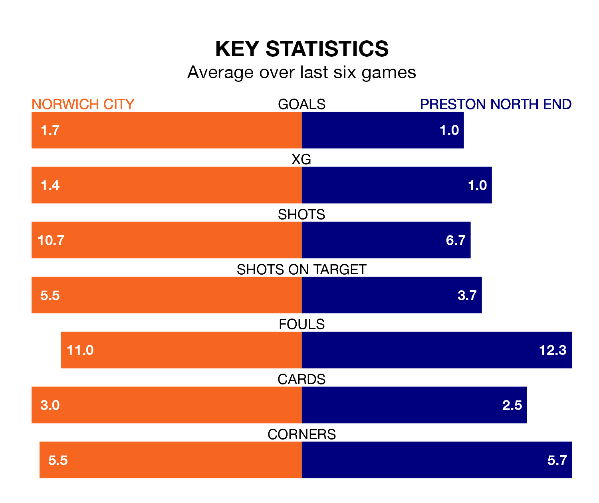

Preston North End make the journey to Carrow Road to play Norwich City on Saturday looking to pick up points to end their three-game losing streak.
Preston's struggles have left them with six points from their last six Championship matches, while their opponents have earned nine from a possible 18.
With 34 goals in 19 games so far this season, Norwich are the league's joint-second-highest scorers with 1.8 goals per game. But they are conceding more than average too, letting in 36 goals at a rate of 1.9 per game.
Preston, meanwhile, are below average scorers, with 1.3 goals per game, compared to a league average of 1.4. They have conceded 1.7 goals per game.
In the last 10 years, Norwich and Preston have played each other on 12 occasions. They won four each, and they drew four times.
On average, the Canaries scored 1.7 goals and the Lilywhites 1.3 in those matches.
Their last meeting was on January 14, when Norwich won 4-0 away.
City's Gabriel Sara is among the league's most creative players, racking up eight assists in 19 appearances so far this season, and holding second spot in the Championship's assist charts.
For North End, Alan Browne, Mads Frøkjær-Jensen, Will Keane, Duane Holmes and Milutin Osmajić have set up the most goals, having laid on two assists apiece to date.
The Lilywhites are eighth in the table after 19 games, of which they have won eight and drawn four, earning 28 points.
The Canaries are five places behind the away side in 13th, with eight wins and two draws putting them on 26 points.
Norwich's last match was on Sunday, a 2-1 win against Bristol City, with Adam Uche Idah and George Tanner (own goal) getting the goals for the Canaries.
Preston lost 2-0 against Queens Park Rangers last time out, on December 1.
